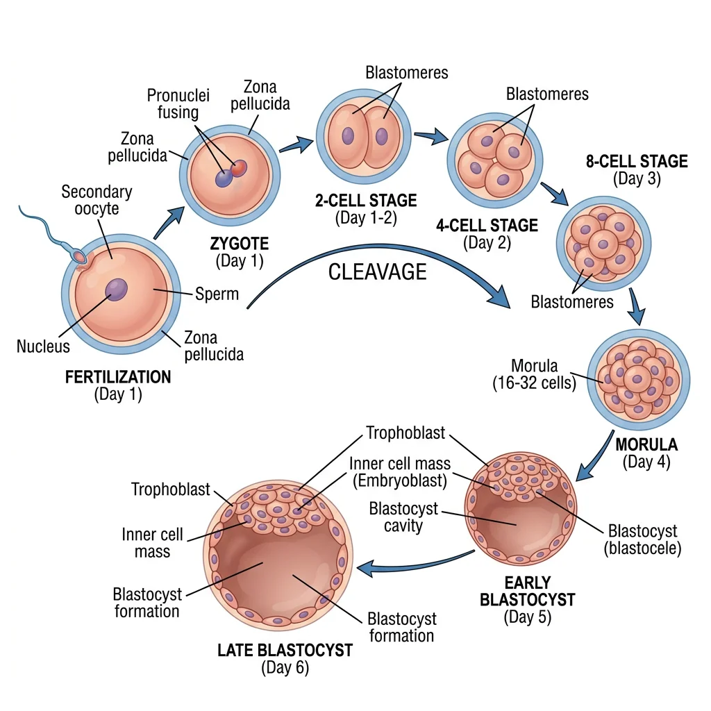
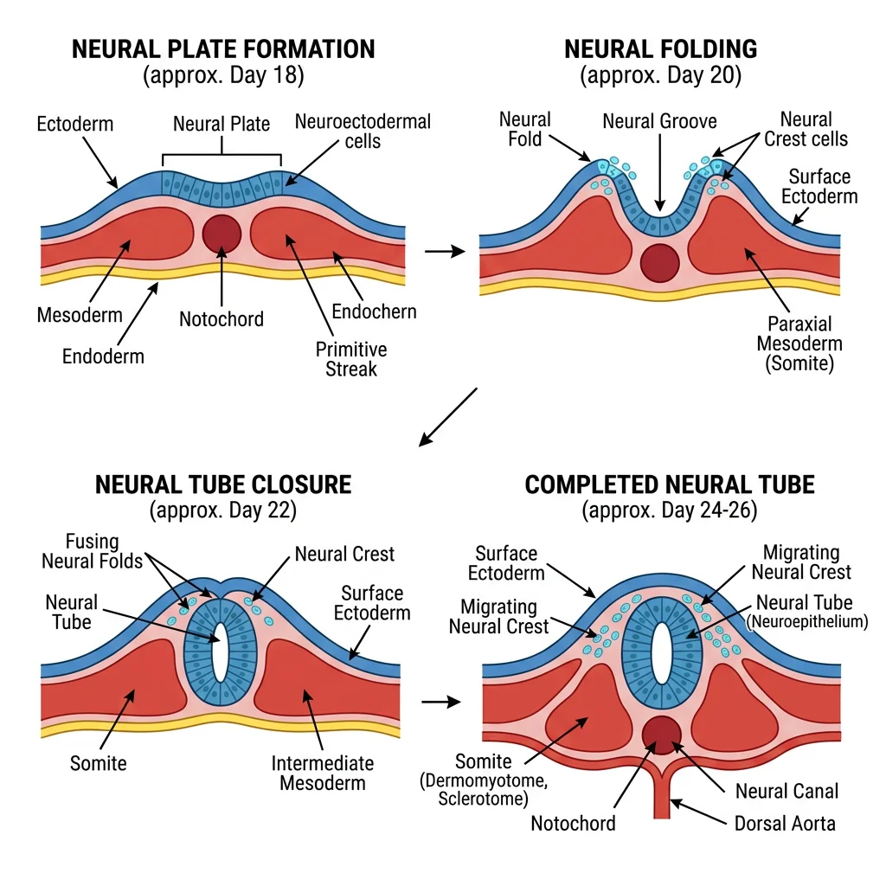
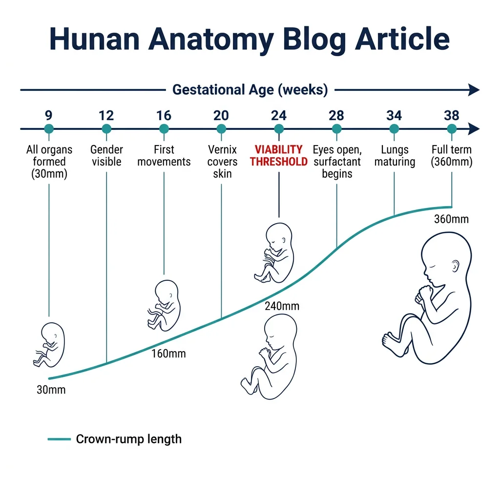
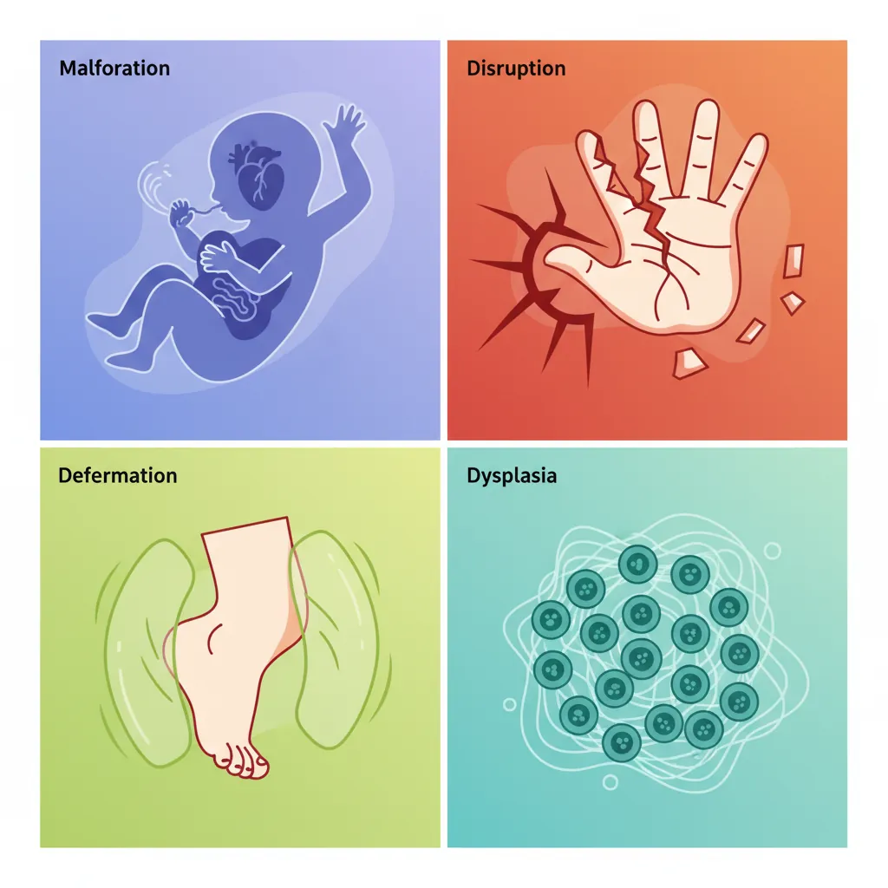
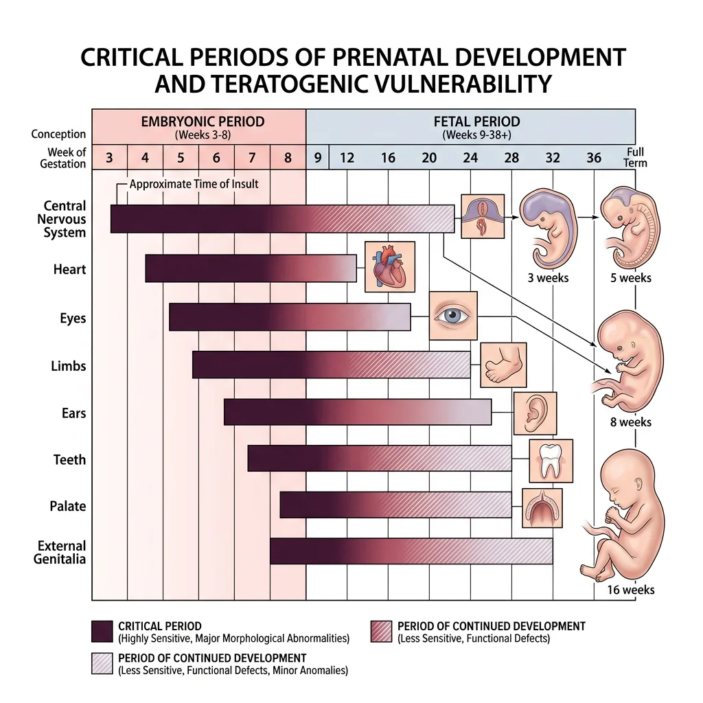
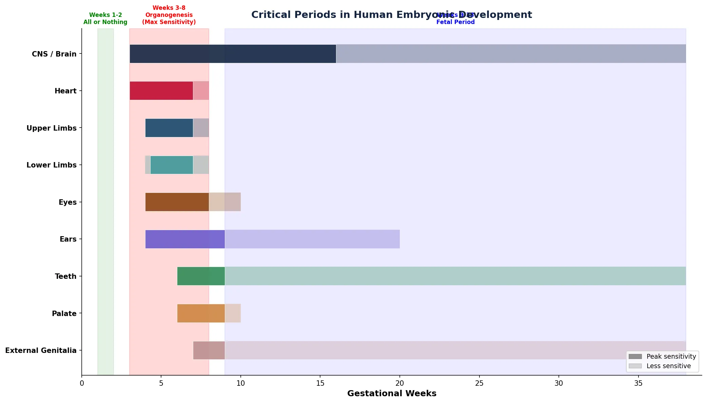

Human Anatomy Mastery
Anatomical Terminology & Body Planes
Directional terms, planes, cavities, tissuesSkeletal System & Joints
Osteology, axial & appendicular, arthrologyMuscular System & Movement
Muscle types, functional groups, biomechanicsCardiovascular & Lymphatic Anatomy
Heart, vessels, lymphatics, clinical linksNervous System & Neuroanatomy
CNS, PNS, autonomic, functional pathwaysVisceral Anatomy — Thorax & Abdomen
Thoracic & abdominal organs, peritoneumHead, Neck & Special Senses
Skull foramina, eye, ear, oral anatomySurface Anatomy & Clinical Imaging
Landmarks, X-ray, CT, MRI, proceduresHistology & Microscopic Anatomy
Cell ultrastructure, tissue & organ histologyEmbryology & Developmental Anatomy
Germ layers, organogenesis, malformationsFunctional & Applied Anatomy
Biomechanics, posture, gait, integrationRegional Dissection Mastery
Upper/lower limb, thorax, abdomen, pelvisEarly Development
Human development begins at the moment of fertilization and proceeds through a breathtaking sequence of events — from a single cell to a recognizable human form in just eight weeks. Understanding early development is essential not only for embryologists but for every clinician, since congenital malformations (affecting ~3% of all live births) originate during these critical first weeks.

Fertilization & Cleavage
Fertilization occurs in the ampulla of the uterine (fallopian) tube, typically within 24 hours of ovulation. Of the ~200–300 million sperm deposited, only a few hundred reach the oocyte. The process involves several steps:
- Capacitation — sperm undergo biochemical changes in the female tract, destabilizing the acrosomal membrane
- Acrosome reaction — sperm release enzymes (hyaluronidase, acrosin) to penetrate the corona radiata and zona pellucida
- Sperm-oocyte membrane fusion — triggers the cortical reaction (zona reaction), which hardens the zona pellucida to prevent polyspermy
- Completion of meiosis II — the secondary oocyte completes its second division, forming the definitive oocyte and second polar body
- Pronuclei formation and syngamy — male and female pronuclei merge, restoring the diploid chromosome number (46)
The resulting zygote undergoes cleavage — a series of rapid mitotic divisions without growth. By day 3, it is a 16-cell morula (resembling a mulberry). By day 4–5, a fluid-filled cavity (blastocoel) forms, creating the blastocyst with two distinct cell populations: the inner cell mass (embryoblast — which becomes the embryo) and the trophoblast (outer layer — which becomes the placenta).
IVF — The Birth of Louise Brown (1978)
Robert Edwards and Patrick Steptoe achieved the first successful in vitro fertilization (IVF), resulting in Louise Joy Brown's birth on July 25, 1978. Edwards received the Nobel Prize in Physiology or Medicine in 2010 for this breakthrough. IVF exploits our understanding of fertilization and early cleavage — oocytes are retrieved, fertilized with sperm in culture, allowed to develop to the blastocyst stage, and then transferred to the uterus. Today, over 8 million babies have been born through IVF worldwide.
Implantation & Bilaminar Disc
Around day 6–7, the blastocyst implants in the posterior wall of the uterine body, typically in the upper segment. The trophoblast differentiates into two layers:
- Cytotrophoblast — inner layer of individual cells (mitotically active)
- Syncytiotrophoblast — outer multinucleated mass that invades the endometrium, eroding maternal blood vessels to establish early blood supply
By the end of week 2 — the "week of twos" — the embryo consists of a bilaminar disc with two layers: the epiblast (dorsal, facing the amniotic cavity) and the hypoblast (ventral, facing the yolk sac). Two cavities form: the amniotic cavity (above) and the primary yolk sac (below). The extraembryonic mesoderm and chorionic cavity also develop.
Gastrulation & Germ Layers
Gastrulation (day 15–16) is arguably the most important event in embryology — it converts the bilaminar disc into a trilaminar disc with three germ layers. The process begins with formation of the primitive streak on the epiblast surface.
Epiblast cells migrate inward through the primitive streak and spread between and below the epiblast, forming:
| Germ Layer | Derivatives | Mnemonic Aid |
|---|---|---|
| Ectoderm | Skin (epidermis), nervous system (brain, spinal cord, neural crest), sensory organs (lens, inner ear), tooth enamel, anterior pituitary | "Surface + Nerves" |
| Mesoderm | Muscle, bone, cartilage, connective tissue, cardiovascular system, kidneys, gonads, spleen, adrenal cortex | "Middle stuff — muscle, bone, blood" |
| Endoderm | GI tract lining, respiratory epithelium, liver, pancreas, thyroid, parathyroid, thymus, urinary bladder lining | "Inside linings + glands" |
Organogenesis
Organogenesis (weeks 3–8) is the period when the three germ layers differentiate into the primordia of all major organ systems. This is the period of maximum vulnerability to teratogens — disruptions during organogenesis produce the most severe structural malformations.

Neural Tube & CNS Formation
Neurulation begins in week 3 when the notochord induces the overlying ectoderm to thicken into the neural plate. The edges elevate as neural folds, which progressively approach each other and fuse at the midline, forming the neural tube — the precursor of the entire central nervous system.
Closure begins in the cervical region (day 22) and proceeds bidirectionally. The cranial end (anterior neuropore) closes by day 25; the caudal end (posterior neuropore) closes by day 27. Failure of closure produces devastating defects.
The neural tube differentiates into brain regions:
- Prosencephalon (forebrain) → telencephalon (cerebral hemispheres) + diencephalon (thalamus, hypothalamus)
- Mesencephalon (midbrain) → midbrain structures (tectum, cerebral peduncles)
- Rhombencephalon (hindbrain) → metencephalon (pons, cerebellum) + myelencephalon (medulla oblongata)
Neural crest cells — a special population that delaminate from the neural folds — migrate throughout the body and give rise to an astonishing variety of structures: dorsal root ganglia, autonomic ganglia, Schwann cells, melanocytes, adrenal medulla, craniofacial bones and cartilage, dental pulp, and the outflow tract of the heart.
DiGeorge Syndrome — Neural Crest Gone Wrong
DiGeorge syndrome (22q11.2 deletion) disrupts neural crest cell migration to the pharyngeal arches. The result is a constellation of defects remembered by the mnemonic CATCH-22: Cardiac defects (conotruncal anomalies), Abnormal facies, Thymic aplasia (immune deficiency), Cleft palate, and Hypocalcemia (absent parathyroids) — all from chromosome 22. This syndrome beautifully illustrates how a single embryological cell population (neural crest) contributes to seemingly unrelated structures across multiple organ systems.
Heart & Vascular Development
The heart is the first functional organ, beginning to beat at approximately day 22. Cardiac development begins with paired cardiogenic cords in the splanchnic mesoderm that canalize to form endocardial heart tubes. These fuse at the midline to form a single heart tube with five segments (from caudal to cranial): sinus venosus, atrium, ventricle, bulbus cordis, and truncus arteriosus.
The heart tube undergoes cardiac looping (day 23–28) — a rightward loop (D-loop) that establishes proper left-right orientation. The ventricle moves to the left and inferiorly; the atrium shifts posteriorly and superiorly.
Subsequent septation divides the heart into four chambers:
- Atrial septation — septum primum grows toward endocardial cushions, with foramen primum then foramen secundum forming; septum secundum creates the foramen ovale (a right-to-left shunt in fetal circulation)
- Ventricular septation — muscular interventricular septum grows upward; the membranous part is completed by endocardial cushion tissue
- Outflow tract division — aorticopulmonary septum (from neural crest cells) spirals downward, dividing the truncus arteriosus into the aorta and pulmonary trunk
Limb Bud Development
Limb buds appear during week 4 — upper limb buds first (day 24), lower limb buds 2 days later. Each bud consists of a mesenchymal core (from lateral plate mesoderm) covered by ectoderm. Development is orchestrated by three signaling centers:
| Signaling Center | Location | Controls | Key Signal |
|---|---|---|---|
| AER (Apical Ectodermal Ridge) | Distal edge of limb bud | Proximal-distal growth (shoulder → hand) | FGFs (fibroblast growth factors) |
| ZPA (Zone of Polarizing Activity) | Posterior margin of bud | Anterior-posterior axis (thumb → pinky) | Sonic Hedgehog (SHH) |
| Dorsal Ectoderm | Non-AER ectoderm | Dorsal-ventral axis (back of hand → palm) | Wnt7a |
Limb bones form by endochondral ossification — mesenchyme condenses, chondrifies (cartilage model), then ossifies. Digits form through apoptosis (programmed cell death) of interdigital mesenchyme — failure of this process causes syndactyly (fused digits).
Fetal Period
The fetal period (weeks 9–38) is characterized by rapid growth and maturation of the organ systems established during organogenesis. While new structures rarely form, existing ones grow enormously — the fetus increases from ~30 mm crown-rump length at 9 weeks to ~360 mm at birth.

Growth Milestones
| Week | CRL (mm) | Key Developments |
|---|---|---|
| 9–12 | 30 → 87 | Head is ~half body length; primary ossification centers appear; external genitalia distinguishable by week 12; intestines return from physiological herniation |
| 13–16 | 87 → 140 | Rapid body growth; limbs reach relative proportions; coordinated movements; lanugo hair appears; ossification progresses |
| 17–20 | 140 → 190 | Mother feels fetal movements ("quickening" ~week 18); vernix caseosa covers skin; eyebrows and head hair visible; brown fat begins forming |
| 21–25 | 190 → 230 | Rapid weight gain; type II pneumocytes begin surfactant production (~week 24); eyes open; fingernails form; viability threshold (~24 weeks) |
| 26–29 | 230 → 265 | Lungs can support gas exchange (with surfactant); CNS can regulate breathing and temperature; toenails visible; bone marrow becomes major site of hematopoiesis |
| 30–34 | 265 → 300 | Pupillary light reflex present; subcutaneous fat increases; skin becomes smooth and pink; testes descend (male) |
| 35–38 | 300 → 360 | Firm grasp; chest and breasts prominent; lanugo mostly shed; head circumference ~35 cm; average birth weight ~3,400 g |
Placenta & Fetal Circulation
The placenta is a remarkable organ shared between mother and fetus. It develops from trophoblast (fetal contribution) and decidua basalis (maternal contribution). By week 4, chorionic villi are bathed in maternal blood within intervillous spaces, allowing exchange by diffusion.
Placental functions include: gas exchange (O₂, CO₂), nutrient transfer, waste removal, hormone production (hCG, progesterone, estrogen, human placental lactogen), and immunological barrier (though not impervious — IgG crosses, as do some pathogens like rubella, CMV, Toxoplasma, and Treponema).
Fetal circulation has three unique shunts that bypass organs not yet functional:
- Ductus venosus — shunts oxygenated blood from the umbilical vein past the liver directly to the IVC
- Foramen ovale — shunts blood from right atrium to left atrium, bypassing the pulmonary circuit
- Ductus arteriosus — shunts blood from the pulmonary trunk to the aorta, diverting blood away from the high-resistance fetal lungs
At birth, with the first breath and clamping of the umbilical cord, pulmonary vascular resistance drops dramatically. These shunts close: the foramen ovale becomes the fossa ovalis, the ductus arteriosus becomes the ligamentum arteriosum (closure stimulated by rising O₂ and falling prostaglandins), and the ductus venosus becomes the ligamentum venosum.
Maturation of Organ Systems
During the fetal period, each organ system undergoes progressive maturation:
- Respiratory — lung development progresses through pseudoglandular (5–17 weeks), canalicular (16–25 weeks), terminal sac/saccular (24–38 weeks), and alveolar (36 weeks → childhood) stages. Surfactant production begins ~24 weeks but is adequate only by ~35 weeks.
- Renal — the definitive kidney (metanephros) begins forming at week 5 and produces urine by weeks 11–12, contributing to amniotic fluid volume. Oligohydramnios (too little fluid) suggests renal agenesis or obstruction.
- GI — intestinal villi develop by week 9; liver hematopoiesis peaks at weeks 12–16; pancreatic islets secrete insulin by week 10. Meconium (fetal intestinal contents) accumulates in the third trimester.
- Nervous — neuronal proliferation peaks at weeks 12–18; migration and cortical layering occur weeks 12–24; synaptogenesis and myelination accelerate in the third trimester and continue postnatally.
- Hematopoietic — blood formation shifts from yolk sac (weeks 3–8) to liver (weeks 6–30) to bone marrow (week 28 onward). Hemoglobin shifts from embryonic → fetal (HbF) → adult (HbA).
Congenital Malformations
Congenital malformations affect approximately 3% of all live births and are a leading cause of infant mortality. Understanding their embryological basis is crucial for prevention, early detection, and counseling. Malformations are classified as:
- Malformation — intrinsic defect in morphogenesis (e.g., neural tube defect, cleft palate)
- Disruption — destruction of a previously normal structure (e.g., amniotic band syndrome)
- Deformation — abnormal form due to mechanical forces (e.g., clubfoot from oligohydramnios)
- Dysplasia — abnormal tissue organization (e.g., skeletal dysplasias)

Neural Tube Defects
Neural tube defects (NTDs) result from failure of neural tube closure and are among the most common congenital malformations (1–2 per 1,000 births without folate supplementation).
| Defect | Closure Failure | Features | Prognosis |
|---|---|---|---|
| Anencephaly | Anterior neuropore | Absence of brain and calvarium; frog-like face | Incompatible with prolonged life |
| Spina Bifida Occulta | Posterior (vertebral arches only) | Bony defect covered by skin; often asymptomatic; tuft of hair over area | Usually benign; incidental finding |
| Meningocele | Posterior | Meninges protrude through bony defect; spinal cord in normal position | Good with surgical repair |
| Myelomeningocele | Posterior | Spinal cord and meninges protrude; neural tissue exposed | Motor/sensory deficits below lesion; hydrocephalus common |
Heart Defects
Congenital heart defects (CHDs) are the most common type of birth defect, affecting ~8 per 1,000 live births. They range from minor (small VSD that closes spontaneously) to life-threatening (hypoplastic left heart syndrome).
| Defect | Embryological Basis | Features | Cyanosis? |
|---|---|---|---|
| VSD (Ventricular Septal Defect) | Failure of membranous septum closure | Most common CHD; L→R shunt; pansystolic murmur | No (acyanotic) |
| ASD (Atrial Septal Defect) | Failure of septum primum/secundum | L→R shunt; fixed split S2 | No (acyanotic) |
| Tetralogy of Fallot | Unequal division of truncus arteriosus (anterosuperior deviation) | VSD + overriding aorta + RV hypertrophy + pulmonary stenosis | Yes (cyanotic) |
| Transposition of Great Arteries | Failure of aorticopulmonary septum to spiral | Aorta arises from RV, pulmonary artery from LV; parallel circuits | Yes (severely cyanotic) |
| Coarctation of Aorta | Abnormal involution of aortic arch segment | Narrowing near ductus arteriosus; upper limb hypertension; rib notching | No (acyanotic) |
| PDA | Failure of ductus arteriosus closure | Continuous "machinery" murmur; common in premature infants | No (acyanotic initially) |
GI & Urogenital Anomalies
GI Anomalies:
- Tracheoesophageal fistula (TEF) — abnormal communication between trachea and esophagus due to faulty partitioning of the foregut. Most common type (85%): proximal esophageal atresia with distal TEF. Presents with drooling, choking with feeding, and inability to pass nasogastric tube.
- Pyloric stenosis — hypertrophy of pyloric sphincter muscle; presents at 3–6 weeks with projectile vomiting; more common in firstborn males.
- Meckel's diverticulum — persistence of the vitelline (omphalomesenteric) duct; follows the "Rule of 2s": 2% of population, 2 feet from ileocecal valve, 2 inches long, 2 types of ectopic tissue (gastric and pancreatic).
- Omphalocele vs. Gastroschisis — omphalocele: midline defect with herniated viscera covered by peritoneum (failure of lateral body wall folding); gastroschisis: paraumbilical defect with exposed bowel (no covering membrane).
Urogenital Anomalies:
- Horseshoe kidney — fusion of lower poles during ascent; trapped below the inferior mesenteric artery. Usually asymptomatic but increases risk of infection and stones.
- Renal agenesis — bilateral agenesis causes Potter sequence (oligohydramnios → pulmonary hypoplasia, limb deformities, facial compression); incompatible with life.
- Hypospadias — failure of urethral folds to fuse; urethral opening on ventral surface of penis. Epispadias (dorsal opening) is rarer and associated with bladder exstrophy.
- Cryptorchidism — undescended testis; most common in premature males; associated with infertility and increased testicular cancer risk if uncorrected.
Embryology as House Construction
Think of embryology like building a house. Gastrulation is laying the foundation (three layers). Organogenesis is framing the rooms and installing plumbing, electrical, and HVAC — the critical infrastructure period where mistakes are structural and hard to fix. The fetal period is finishing — painting, furnishing, installing fixtures. You can still damage a nearly-complete house (fetal insults), but the damage is usually more limited than knocking out a load-bearing wall during framing (embryonic insults). And like construction, there are critical windows — you can't wire electricity after the walls are sealed.
Teratology & Clinical Relevance
Teratology is the study of abnormal development and its causes. About 65–70% of congenital malformations have unknown etiology; the remainder are attributed to genetic factors (~25%), environmental teratogens (~10%), and multifactorial causes.

Teratogenic Agents
| Category | Agent | Effects |
|---|---|---|
| Drugs | Thalidomide | Limb reduction defects (phocomelia), ear and heart malformations |
| Isotretinoin (Accutane) | Craniofacial, cardiac, thymic, CNS defects | |
| Alcohol (ethanol) | Fetal alcohol spectrum disorders (FASD): microcephaly, smooth philtrum, thin upper lip, intellectual disability | |
| Valproic acid | Neural tube defects, craniofacial anomalies | |
| Infections (TORCH) | Rubella | Cataracts, deafness, heart defects (PDA), intellectual disability |
| Cytomegalovirus (CMV) | Microcephaly, hearing loss, hepatosplenomegaly, petechiae | |
| Toxoplasma gondii | Hydrocephalus, intracranial calcifications, chorioretinitis | |
| Maternal Conditions | Diabetes mellitus | Caudal regression syndrome, cardiac defects, macrosomia, NTDs |
| Phenylketonuria (PKU) | Microcephaly, intellectual disability, heart defects (if untreated) | |
| Radiation | Ionizing radiation (>5 rad) | Microcephaly, intellectual disability, growth restriction |
The Thalidomide Tragedy (1957–1962)
Thalidomide was marketed as a safe sedative for pregnant women with morning sickness. Between 1957 and 1962, it caused severe limb defects (phocomelia — "seal limbs") in over 10,000 children worldwide. The disaster led to the establishment of modern drug safety regulations, including the requirement for teratogenicity testing before drug approval. Frances Kelsey of the FDA famously blocked thalidomide's approval in the United States, preventing thousands of cases. Today, thalidomide is used under strict controls for conditions like multiple myeloma and leprosy — with mandatory pregnancy prevention programs.
Critical Periods
Each organ system has a critical (sensitive) period during which it is most susceptible to teratogenic disruption. The timing of exposure determines which structures are affected:
- Weeks 1–2 — "All or nothing" period: teratogens either kill the embryo or cause no defect (cells are still totipotent and can compensate)
- Weeks 3–8 — Maximum sensitivity: each organ has its own window (heart: weeks 3–7; limbs: weeks 4–8; brain: week 3 through birth)
- Weeks 9–38 — Functional maturation: teratogens cause growth restriction and functional deficits rather than structural malformations (brain remains vulnerable throughout)
Prenatal Screening
Modern prenatal diagnosis combines non-invasive screening with confirmatory invasive testing:
| Method | Timing | Detects | Notes |
|---|---|---|---|
| First-trimester screen | 11–14 weeks | Trisomy 21, 18, 13 risk | Nuchal translucency (ultrasound) + maternal serum markers (β-hCG, PAPP-A) |
| Quad screen | 15–20 weeks | NTDs, trisomies | Maternal serum AFP, β-hCG, estriol, inhibin A |
| Cell-free fetal DNA (NIPT) | ≥10 weeks | Trisomies, sex chromosome aneuploidies | High sensitivity/specificity; screening test, not diagnostic |
| Ultrasound | Throughout | Structural anomalies, growth, fluid volume | Anatomy scan at 18–22 weeks is standard |
| Chorionic villus sampling (CVS) | 10–13 weeks | Chromosomal and genetic disorders | Invasive; ~1% miscarriage risk; placental tissue sampled |
| Amniocentesis | 15–20 weeks | Chromosomal disorders, NTDs, metabolic diseases | Invasive; ~0.5% miscarriage risk; amniotic fluid sampled |
Practice & Tools
Applied Code Example
Use this Python script to create a visual timeline of critical periods in human embryonic development — essential for understanding teratogenic vulnerability windows:
import matplotlib.pyplot as plt
import matplotlib.patches as mpatches
import numpy as np
# Define organ systems and their critical periods (weeks)
organs = {
'CNS / Brain': {'start': 3, 'end': 38, 'peak_start': 3, 'peak_end': 16, 'color': '#132440'},
'Heart': {'start': 3, 'end': 8, 'peak_start': 3, 'peak_end': 7, 'color': '#BF092F'},
'Upper Limbs': {'start': 4, 'end': 8, 'peak_start': 4, 'peak_end': 7, 'color': '#16476A'},
'Lower Limbs': {'start': 4, 'end': 8, 'peak_start': 4.3, 'peak_end': 7, 'color': '#3B9797'},
'Eyes': {'start': 4, 'end': 10, 'peak_start': 4, 'peak_end': 8, 'color': '#8B4513'},
'Ears': {'start': 4, 'end': 20, 'peak_start': 4, 'peak_end': 9, 'color': '#6A5ACD'},
'Teeth': {'start': 6, 'end': 38, 'peak_start': 6, 'peak_end': 9, 'color': '#2E8B57'},
'Palate': {'start': 6, 'end': 10, 'peak_start': 6, 'peak_end': 9, 'color': '#CD853F'},
'External Genitalia': {'start': 7, 'end': 38, 'peak_start': 7, 'peak_end': 9, 'color': '#BC8F8F'},
}
fig, ax = plt.subplots(figsize=(14, 8))
# Draw period backgrounds
ax.axvspan(1, 2, alpha=0.1, color='green', label='All-or-Nothing')
ax.axvspan(3, 8, alpha=0.15, color='red', label='Max Sensitivity')
ax.axvspan(9, 38, alpha=0.08, color='blue', label='Functional Maturation')
y_positions = list(range(len(organs)))
for i, (organ, data) in enumerate(organs.items()):
# Full sensitive period (lighter)
ax.barh(i, data['end'] - data['start'], left=data['start'],
height=0.5, color=data['color'], alpha=0.3, edgecolor='none')
# Peak sensitivity (darker)
ax.barh(i, data['peak_end'] - data['peak_start'],
left=data['peak_start'], height=0.5,
color=data['color'], alpha=0.85, edgecolor='white', linewidth=0.5)
ax.set_yticks(y_positions)
ax.set_yticklabels(list(organs.keys()), fontsize=10, fontweight='bold')
ax.set_xlabel('Gestational Weeks', fontsize=12, fontweight='bold')
ax.set_title('Critical Periods in Human Embryonic Development',
fontsize=14, fontweight='bold', color='#132440', pad=15)
ax.set_xlim(0, 39)
ax.invert_yaxis()
# Add period labels
ax.text(1.5, -0.8, 'Weeks 1-2\nAll or Nothing', ha='center',
fontsize=8, color='green', fontweight='bold')
ax.text(5.5, -0.8, 'Weeks 3-8\nOrganogenesis\n(Max Sensitivity)',
ha='center', fontsize=8, color='red', fontweight='bold')
ax.text(23.5, -0.8, 'Weeks 9-38\nFetal Period',
ha='center', fontsize=8, color='blue', fontweight='bold')
# Legend
dark_patch = mpatches.Patch(color='gray', alpha=0.85, label='Peak sensitivity')
light_patch = mpatches.Patch(color='gray', alpha=0.3, label='Less sensitive')
ax.legend(handles=[dark_patch, light_patch], loc='lower right', fontsize=9)
ax.spines['top'].set_visible(False)
ax.spines['right'].set_visible(False)
plt.tight_layout()
plt.savefig('critical_periods_chart.png', dpi=150, bbox_inches='tight')
plt.show()
print("Chart saved as critical_periods_chart.png")
Embryology Tracker Tool
Use this interactive tool to track developmental events, document embryological structures, and create structured study reports. Export as Word, Excel, or PDF.
Embryology Development Tracker
Fill in the fields below to document embryological events and developmental milestones. Download as Word, Excel, or PDF.
Conclusion & Next Steps
Embryology reveals how a single fertilized cell transforms into a complex human being through an exquisitely choreographed sequence of events. We traced the journey from fertilization and cleavage through gastrulation (establishing three germ layers), neurulation, cardiac looping, and the formation of every major organ system during the critical first eight weeks. We then followed fetal growth and maturation, explored the fetal circulation with its unique shunts, and examined how disruptions at specific times produce specific congenital malformations — from neural tube defects to heart anomalies to GI and urogenital abnormalities.
Understanding these developmental foundations is essential for clinical practice: it explains why folic acid prevents spina bifida, why certain drugs are contraindicated in pregnancy, and why prenatal screening targets specific windows. As you move forward to functional anatomy, you'll see how these developmental origins influence adult form and function — because anatomy is ultimately embryology frozen in time.